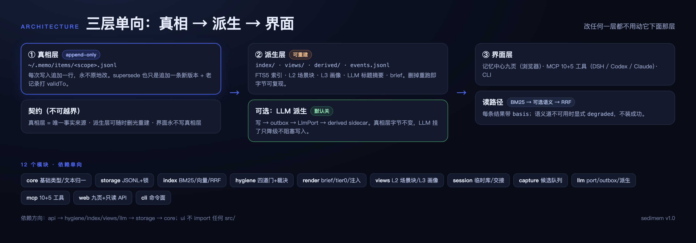

sedimem.
本地优先的个人 AI 记忆系统：真相层只追加，其余全部可重建。
648tests
I1–I50评测对
0runtime 依赖
v1.0.1当前版本

写入四道门

双路检索

LLM 总结层（可选）

# 三行开启 mkdir -p ~/.config/sedimem && printf '%s\n' '<key>' > ~/.config/sedimem/llm-key && chmod 600 ~/.config/sedimem/llm-key export MEMO_LLM_PROVIDER=openai-compatible MEMO_LLM_BASE_URL=https://open.bigmodel.cn/api/paas/v4 MEMO_LLM_MODEL=glm-5.3-flash memo llm status | memo llm test # 然后 memo derive --rebuild
会话临时库

memo session start
memo session checkpoint
memo session status
memo session close
memo session sweep
记忆中心九页


今日图谱搜索
卫生编辑导入
会话交接设置
启动：memo serve --port 7788；加 --write 才可编辑（token + If-Match）。
五层门禁

三端接入
三端各配一条 stdio MCP，指向同一个 server.js 与同一个 MEMO_HOME；常驻进程记得先 memory_scope 对齐分库。
# DSH：~/.dsh/profiles/<profile>/cordis.patch.yml
- insert:
- id: memory-sedimem
name: '@deepseek-ai/dsh-mcp-client'
config:
serverName: memo
transport: stdio
command: /opt/homebrew/bin/node
args: ['/ABS/PATH/versions/v1.0/src/mcp/server.js']
env: { MEMO_HOME: '$HOME/.memo' }
toolCallTimeoutMs: 15000# Codex CLI：~/.codex/config.toml
[mcp_servers.memo]
command = "/opt/homebrew/bin/node"
args = ["/ABS/PATH/versions/v1.0/src/mcp/server.js"]
enabled = true
[mcp_servers.memo.env]
MEMO_HOME = "$HOME/.memo"# Claude Code
claude mcp add --scope user memo -e MEMO_HOME=$HOME/.memo -- \
/opt/homebrew/bin/node /ABS/PATH/versions/v1.0/src/mcp/server.js
# 自检（期望 PASS）
bash versions/v1.0/configs/verify-three-clients.sh版本时间线
- v0.1 真相层 + BM25 + 四道门写入
- v0.2 只读观察台（今日/图谱/卫生）+ 版本目录规则
- v0.3 分层视图 L2 场景块 / L3 画像 / 注入分级
- v0.4 语义道（EmbedderPort）+ 半自动捕获 + 入库脱敏 + 分歧视图
- v0.5 DSH 插件化 + 双主题 + pages-verify
- v0.6 会话临时库 + 批量导入 + 交接文档 + 写侧粒度契约
- v1.0 12 模块重构 + LLM 总结层 + 记忆中心九页
- v1.0.1 图谱可用性 + 配色对齐 DSH
- v1.0.2 思考链/重建/懒加载三处真 fix + 文档改「图为主」
规则：X.Y 换目录（当前 versions/v1.0），X.Y.Z 同目录补丁；指针在 versions/CURRENT。